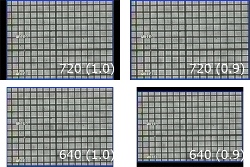
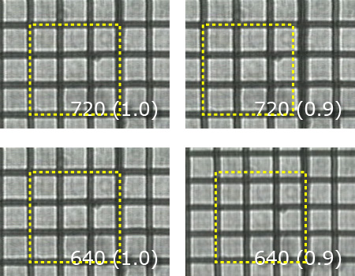

さて， Adobe Premiereを例にとって変換の様子を見てみましょう．
もちろん，他のアプリでも変換できますが，一例として．
Premiereにおいて，ムービーから静止画の書き出しは，
ムービー書きだし
コマンドで，ファイル形式をTIFFなどの静止画形式に指定すればいいのです．
その際に，
フレームサイズ
ピクセル縦横比
を設定できます．
この状態で，
フレームサイズ：640ｘ480，720ｘ480
ピクセル縦横比：D1/DV NTSC (0.9)，
正方形ピクセル(1.0)
という４通りの条件で書き出してみましょう．
その結果，

となります．
720と640で横のサイズが違うのは当然ですね．
ただ，720(1.0)では両サイドに黒の帯が，640(0.9)では今度は縦に黒の帯があります．
さて，もう少し拡大してみましょう．

黄色の枠が，正方形です．
このように，Premiereにおいては，720，640，どちらにせよ，ピクセル縦横比，を1.0に設定しておけば正確に縦横比を設定できることがわかりました．
これはあくまで，Premiereでの設定の仕方ですので，各自変換するソフトをチェックしてみてください．
違うソフトでは，縦横比の設定自体ができないソフトもあります．
そのような場合で，縦横の比率が変化している場合には，縦と横のキャリブレーションを変えて解析する必要があります．
今回の説明はあくまで，実際の作業上でのノウハウとなりますので，なぜ？そうなるのかは，完全に把握してはいません．
また，ＣＣＤ自体のサイズも正方形ではありません．
ここら辺は私の知識ではもうどうしようもありません．
ですので，原理などを詳しく知りたい方は，ちゃんと勉強してくださいね．
最近のEM-CCDカメラなどは最初から，正方形のピクセル形状ですし，画像をそのままPCに転送できるという優れものです．
しかし，高いのが玉にきず．．．．